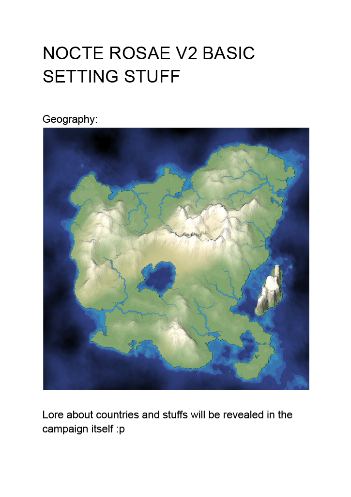
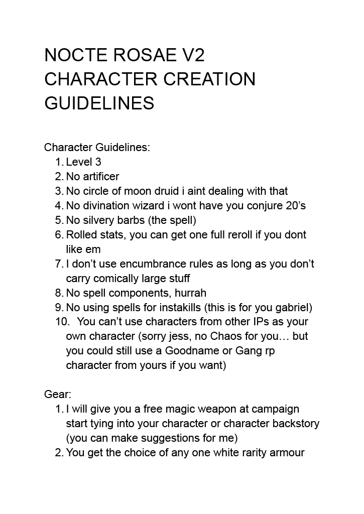
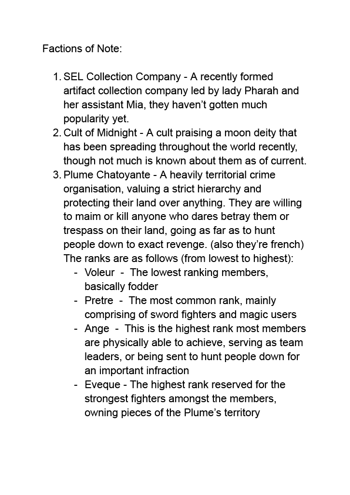
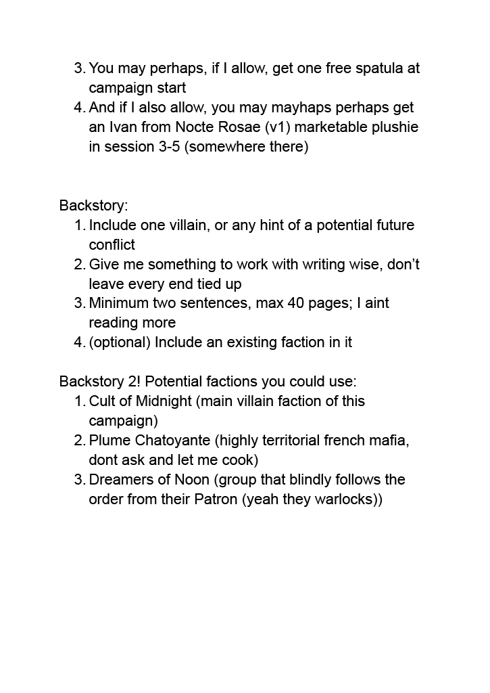

It aint a pdf cuz pdf in html is evil




Session recaps
S1
We wake up in a cave, with weird blue lotus symbols on right hands, we killed corrupted monsters, found two flowers(red[+1d4 fire damage] and white[+1d4 cold damage]), met Ivan, killed a corrupted dragon, entered into a town, val talked with cultist, the knight(lady Amaris) stopped the cultist, told us the directions to the inn, we bought rooms, we took showers, we slept(noah slept a lot), we met lady Amaris and Isabelle Lovelane, then after some ppl ate things we went with Isabelle to the church, met the Lawiet guy who called in Amaris(probably mind controlled) and we started a combat encounter